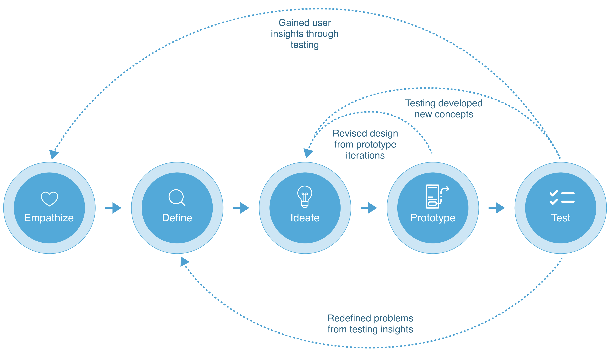
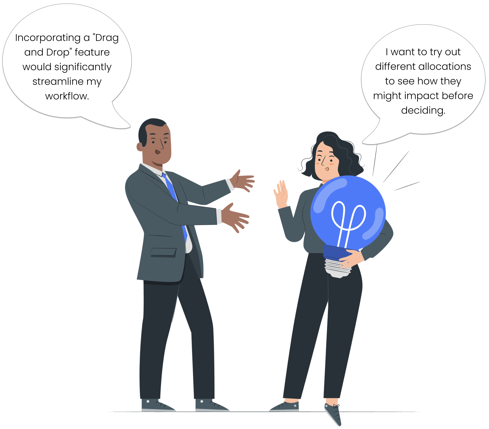
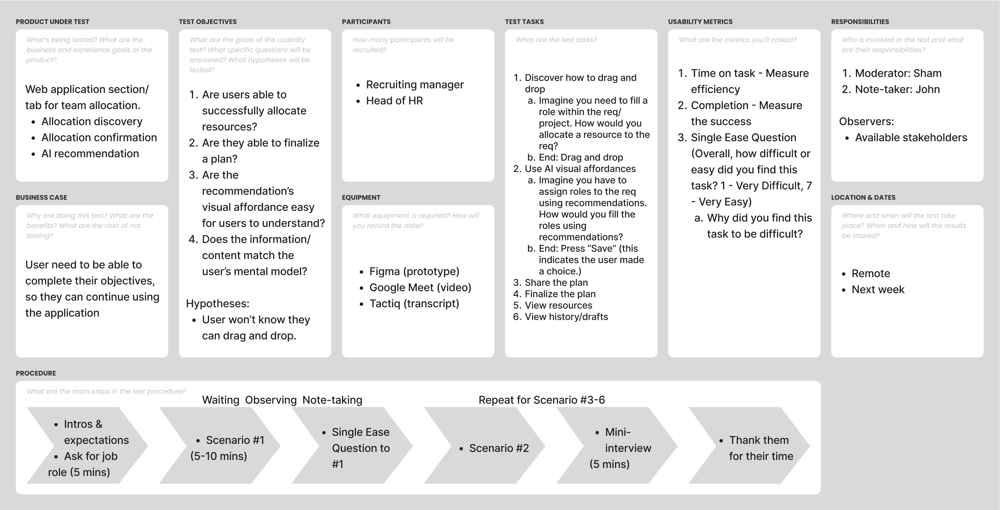
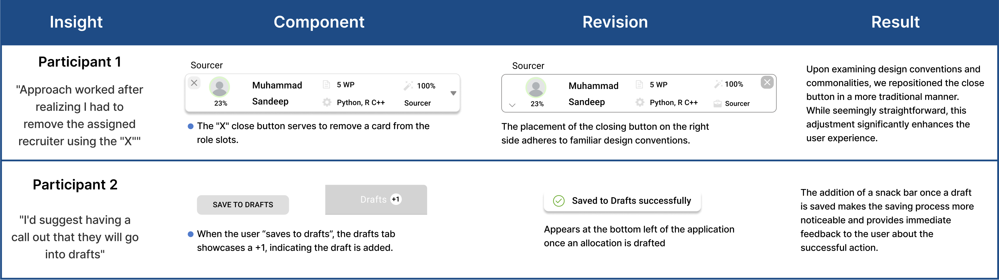

Taltrics
Modern Resource Management Web Application
Over an intensive 8-week sprint, I conducted comprehensive research and design efforts for this complex web application, with a focus on resource allocation. My role involved conducting user interviews, usability testing, and rapid prototyping to refine the app's interface and functionality based on feedback. This process culminated in a modern design solution that is now ready for investors. Visit Taltrics.com
-
CLIENT
TALTRICS -
MY ROLE
UX RESEARCH
LEAD DESIGNER -
PROJECT DATE
FALL 2023 -
TOOLS USED
FIGMA
MAZE
Business leaders need to allocate.
Problem Statment
Today, resource allocation is inefficient. It lacks real-time data support and is typically managed in a room where managers make decisions around on a spreadsheet. This inefficiency can result in increased operational costs and project delays.
Project Scope
Create a low-fidelity wireframe to revamp Taltrics' current resource allocation beta interface.

Design Thinking Process
1
EMPATHIZE
Understanding user's viewpoints
User Interviews
Once the product requirements were examined from the client's perspective, it was time to directly engage with the users. Since our product's users are business leaders with tight schedules, navigating their availability presented challenges. Our project plan was designed to foresee and adapt to these hurdles, ensuring we could handle their potential impact. Over a span of three weeks, we successfully interviewed four business leaders. Despite the limited number of interviews, the insights gained were incredibly valuable and played a pivotal role in the success of our product.
Understanding the Current Workflow
- When it comes to resource allocation, what are your daily responsibilities?
- Can you share an example of a recent resource allocation decision you made?
- What specific information is crucial for making resource allocation decisions?
- Walk me through the steps you take to allocate someone to a requirement.
- What are the constraints or limitations affecting your decisions?
- Are you currently using any software/tools for resource allocation decisions?
- What do you LIKE about your current tools?
- What do you DISLIKE about your current tools?
- Preferred data visualization techniques (charts, graphs, tables, etc.)
- The most important information you want to see first?
- Visual cues for easier assessment and allocation of candidates to teams?
- Features or functionalities that would make an ideal team allocation platform?
- Preferred data presentation and visualization for decision-making?
- Additional aspects about resource allocation needs to share?
- Experience with the current Applicant Tracking System (ATS)?
- Suggestions for ATS improvement?
- Expectations about how a dashboard could improve your workflow?
- Specific tasks or decisions you want the dashboard to assist with?
- Integration expectations of an AI recommendation system into your workflow?
- Expected features or capabilities of an AI-powered recommendation system?
- Importance of providing feedback on AI's recommendations?
- Preferred method for providing feedback?
2
DEFINE
Unraveling the concept
Affinity Mapping
With our collated notes, transcripts, and recordings, we synthesized our findings into insights through the application of affinity mapping.
3
IDEATE
Generating creative solutions
Design Iterations
Based on our current data and an analysis on web application layouts I made the executive decision to introduce a 3-column layout that showcases the primary user story requirements and a drag & drop user flow that's easily understandable and learnable. From there it was iterating and ideating concept after concept to solve for our user problems as more research was gathered.
4
PROTOTYPE
Bringing the concept to life
Rapid Iterations
Now the fun part, I tackled this phase implementing a rapid, iterative approach. From the first wireframe moving forward I created multiple versions of prototypes to explore different solutions and variations. This iterative process helped communicate with stateholders, uncovering flaws, validating assumptions, and refining the concept based on user feedback. Upon completing Version 2 we were ready to test with users. Visit V2 Prototype
V2 - Prototype
5
TEST
Optimizing user experience & plan pivoting
Usability Testing
Our initial plan was to conduct a moderated test via virtual meeting, but because Taltrics' users are executives, their tight schedules rendered them unavailable for meetings. To pivot, our team opted for an unmoderated remote usability test, utilizing Maze. Two participants were able to engage, and the insights collected enabled us to iteratively refine and optimize our design. (Test for portfolio purposes only; no data collection) Check out V2 Usability Test
Moderated Test Plan
Research Synthesis
Key Project Learnings
Understanding User Behavior
One major takeaway is really grasping how users will interact with the product. Diving into their world and understanding their intuitions, needs and pain points gives valuable insight for constructing user-focused solutions.
Embracing Iterative Design
I've learned that perfection isn't a fixed point. It's a continous process of feedback and tweaking, and I love doing it.
Collaboration and Communication
One big lesson is the importance of being on the same page with everyone involved. It's not just about design; it involves effectively communicating and translating those concepts for others. It's about posing the right questions and applying various methods to convey ideas.
Next Steps
Looking ahead to the next steps in this design project, I aim to refine the user flow for managing multiple open tabs and expand the functionality of the drafts page.
Hypotheses
Create a Tab Interface
If users can effortlessly open and switch between multiple profiles and requisitions as needed during their workflow, then it will enhance their efficiency and productivity.
Scope Drafts Page
If users can save drafts, compare, and edit them easily, it will improve their ability to refine and choose the best options for their needs.
Problem Solve Layouts
Introducing these new components into the design might necessitate exploring alternative layouts to ensure optimal integration and user comprehension.
Achievments
- Overall: Provided strong research, sound design choices, and efficient rapid prototyping skills.
- Week 3: Delivered a successful mid-fi prototype instead of a lo-fi wireframe.
- Week 5: The client presented the design to investors.
- Week 6: Our design team worked with engineers to adapt the prototype within a sandbox.

CLOSING
Thank you for exploring this UX project with me. Navigating through the challenges of this project was demanding, yet undeniably fulfilling. Simplifying the products complexity through design was an enjoyable and rewarding journey. If you have any questions or would like to discuss further, I'd love to connect.


Let's Work Together
Whether you have a project in mind or would simply like to chat. Feel free to message me. Let's ideate.